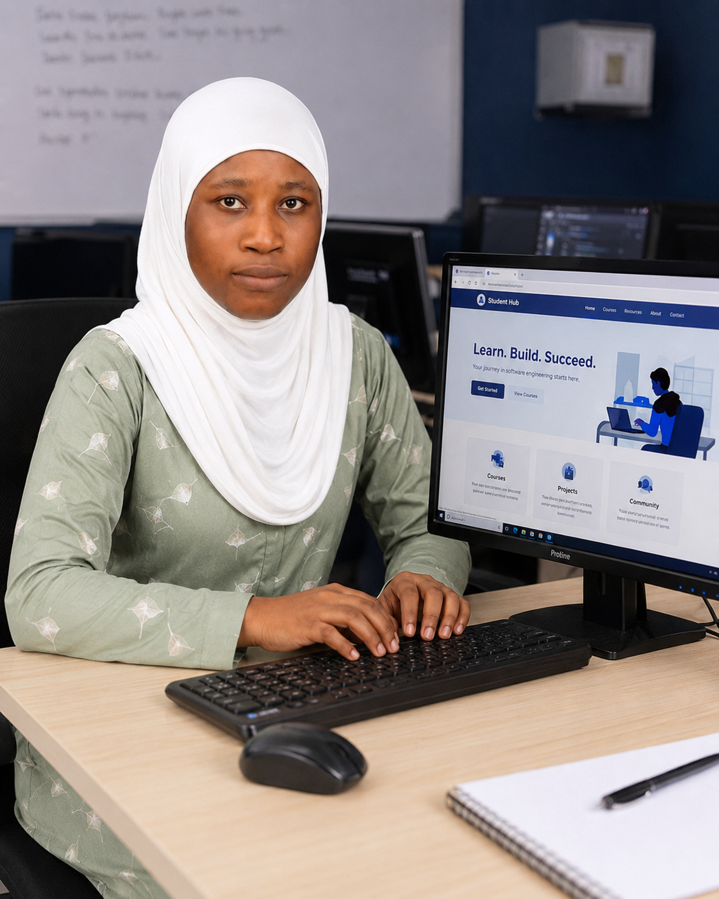

What I'm studying
I am in my first year of a BSc in Software Engineering, currently focused on web technologies: how the Internet works, HTML for structure, CSS for presentation and JavaScript for behaviour.

First-year Software Engineering student at Miva Open University
Welcome to my corner of the web. I built this site from scratch as part of my Introduction to Web Technologies course, and it doubles as my personal portfolio and academic organiser. Have a look around: you can read about my background, browse the projects I have been working on, or even try the interactive planner I use to keep my studies on track.
I am in my first year of a BSc in Software Engineering, currently focused on web technologies: how the Internet works, HTML for structure, CSS for presentation and JavaScript for behaviour.
Small, useful things. So far that includes a revision notes site, a recipe collection and a quiz game. Each one taught me something new about writing cleaner, more organised code.
My goal is to become a full-stack developer building software that solves everyday problems in Nigeria and beyond. This portfolio is step one of that journey.
Every good project deserves a signature. Press play to hear the short audio ident I put together for this site.